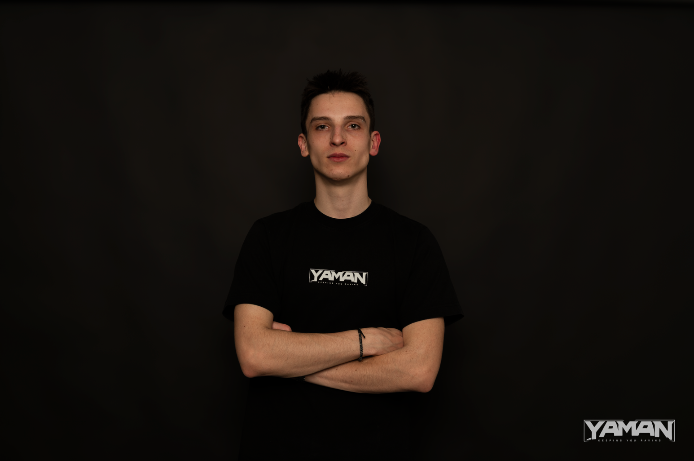

Project Manager / DJ
Chris Tropic
Otevřít profilOpen profile
Šéf celého YAMAN Sound a hlavní člověk za eventy. Drží směr crew, řeší booking, koncept nocí a propojuje label s komunitou kolem neurofunku. Head of YAMAN Sound and the main person behind events. He drives the crew direction, booking, event concepts and the connection with the neurofunk community.